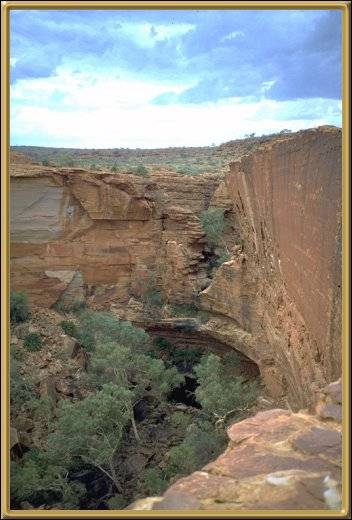

Photographer: Peter Simms
The climb up to the top of the Canyon is pretty hard going, but well worth it. It's a magnificent area, and spectacular things to see here are The Lost City and The Garden of Eden.